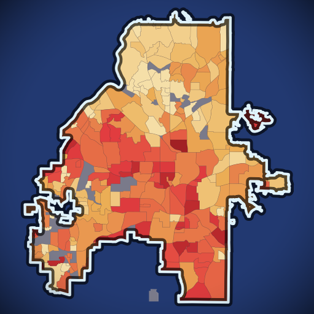
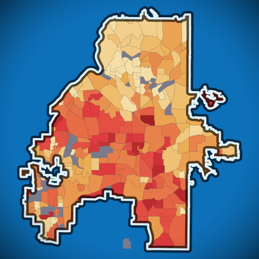
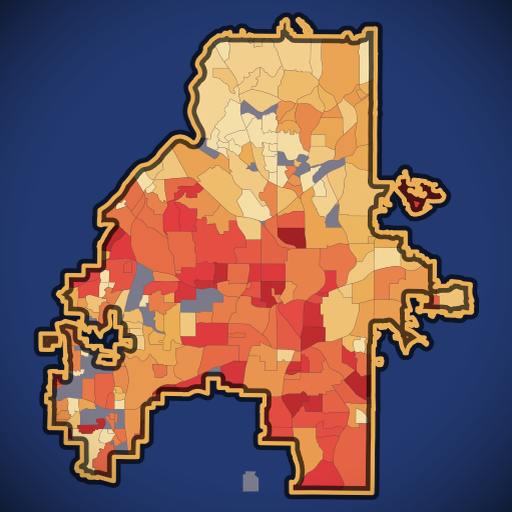
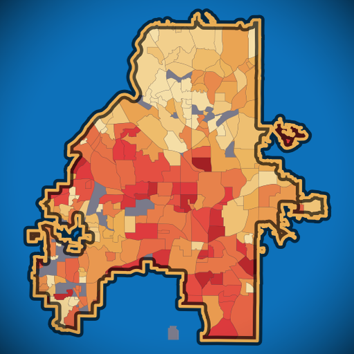
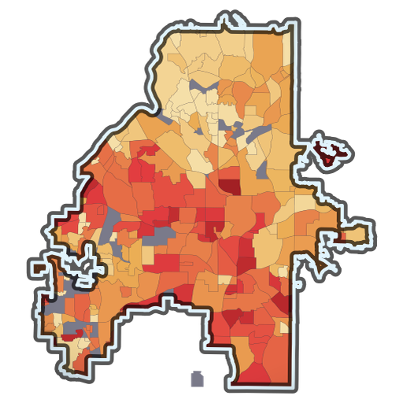

Background variants — 512px

navy + light-blue outline

ATL blue + light-blue outline

navy + amber outline

ATL blue + amber outline

transparent + light-blue outline
transparent on white
Rounded-square — Apple / social profile crop
navy rounded
navy + amber rounded
blue rounded
Favicons — 32 / 16px
32px @2×
32px
16px @2×
16px